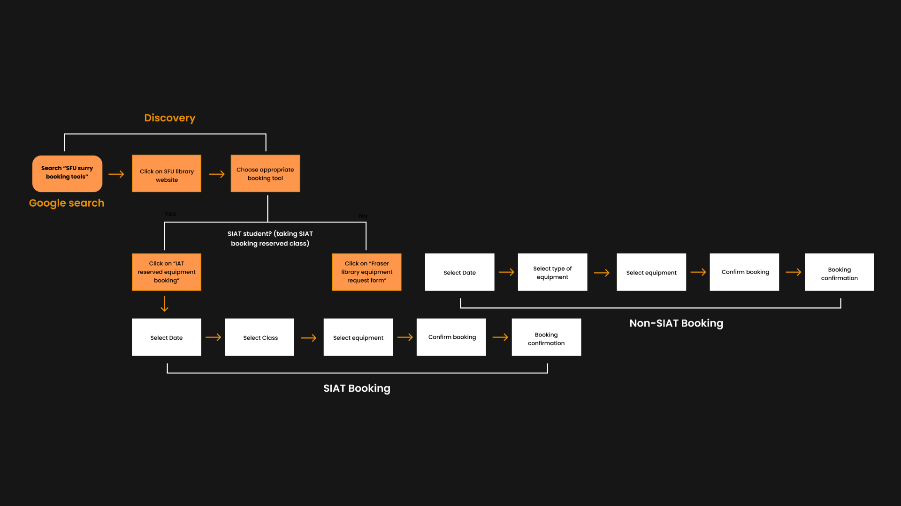

Overview: In the Human-computer interaction (HCI) course, I joined a group of three to evaluate and redesign the SFU equipment booking website. During these five weeks of work, I was mainly responsible for analyzing the problems identified in the user research and proposing solutions based on HCI theories. I then used Figma to help build and modify the final high-fidelity interactive prototype.
Team: Joanne Kim, Daniel Yeo, Yenan Huang
Duration: 5 weeks, October - November 2022
My Role: Researcher, Prototyper
Tool: Figma
Scroll down to view more
In the initial stage of the project, I interviewed two target
users and invited them to perform the usability test of the
site, which gave me more experience in interviewing users.
Combining data from other team members' research, I helped
streamline the user flow to help users quickly complete their
equipment borrowing needs.
I then proposed solutions based on HCI theories for problem
spaces identified by teams together. The three solutions
correspond to the visual processing theory, information scent
& foraging, and the mental model of HCI. For example, in the
image below, the hyperlink to the booking portal on the left
side of the original design is hidden in the text, making it
inadequate for information scent, while the improved design on
the right side makes it more visible and provides a higher
information scent. This experience made me more proficient in
using HCI theory to analyze problems at a higher level and
generate solutions through brainstorming.
Original user flow
Streamlined user flow
Finally, I proposed solutions based on HCI theories for problem spaces identified by teams together. The three solutions correspond to the visual processing theory, information scent & foraging, and the mental model of HCI. For example, in the image below, the hyperlink to the booking portal on the left side of the original design is hidden in the text, making it inadequate for information scent, while the improved design on the right side makes it more visible and provides a higher information scent. This experience made me more proficient in using HCI theory to analyze problems at a higher level and generate solutions through brainstorming.
User interface improvements based on information scent & foraging
In the final presentation phase, I used Figma to help the team
build interactive prototypes together, and I also created
drop-down menus for dates, courses, and categories by using
variants.
One of the major challenges I encountered was the creation of
the dropdown bar. I've only used HTML to create dropdown bars
before, but not Figma. I spent some time exploring on my own
how to create them more efficiently but to no avail. After
reviewing the documents, I discovered Figma's variant feature,
and with the guidance of the documents and team members, I
managed to create multiple dropdown bars using variants.
An overview of all user interfaces and interaction flows
I enjoyed working with the other team members on this project
to evaluate and redesign the SFU equipment booking website. If
I had more time I could have helped the team design for better
accessibility in terms of visual impairment and colour
blindness, as well as creating a responsive UI accessible for
various mobile devices.
I think what I have learned the most is to accomplish more
complete research and design within a limited time. This is
the first time I've done the initial prototyping by returning
to the same users and improving the design again with
feedback, in previous experiences I've only improved the
prototyping through the group's evaluation. This process has
greatly improved the prototype design because it is difficult
for us to examine our design from the perspective of users. I
will put more emphasis on this process in the next group UX
evaluation and design project, iteratively improving the
design with users.